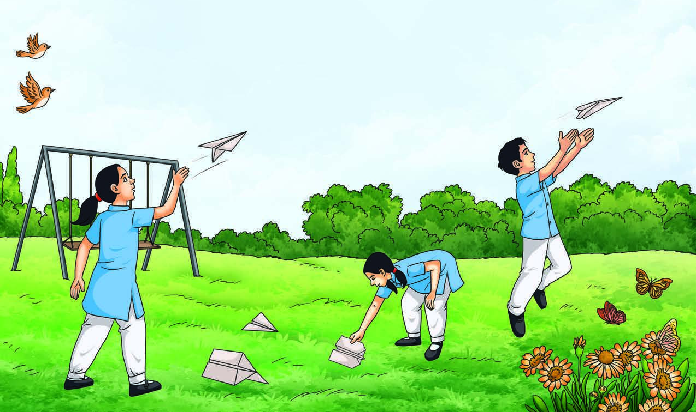
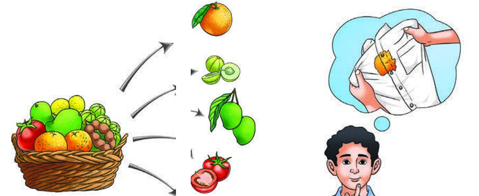

Your complete illustrated lesson — read, practise, and play as you go.
🔬
Science is a Journey
Science is not a list of facts—it is an exciting journey of questioning and discovering!
Science helps us understand the world by asking questions, observing carefully, and testing ideas.
In Grade 7, you will explore both the tiny (like cells) and the huge (like planets), learning how scientists think and how scientific knowledge keeps growing and improving over time.

Science invites questions and investigationScience explains the world from small to large scalesScientific knowledge changes with new evidence
💡 Real-life connection: A phone camera improved over years because scientists kept testing new lenses and sensors and learning from results.
🧠 Try It Yourself
1. What is one main goal of science?
✅ To understand and explain the natural world using evidence.
2. Why is science described as a journey?
✅ Because we keep exploring, testing, and learning new things over time.
3. Give one example of something small and something large studied in science.
✅ Small: cells; large: planets.
4. What makes science different from guessing?
✅ Science uses observations and experiments as evidence.
5. Why can scientific ideas change?
✅ New evidence can improve or replace older explanations.
❓
Curiosity and Asking Questions
Every big discovery begins with a simple, brave question!
Curiosity is the habit of wondering “why?” and “how?” about things you see around you. Good scientific questions are clear, testable, and focused on one idea at a time.
Scientists often start with observations, then ask questions that can be answered by collecting data. A strong question leads to a fair test and a meaningful conclusion.

Curiosity starts scientific thinkingGood questions are clear and testableObservations help you form questions
💡 Real-life connection: Noticing plants near a window grow toward light can lead to the question: “Does light direction affect plant growth?”
🧠 Try It Yourself
1. What is curiosity in science?
✅ The desire to ask questions and find explanations.
2. Which is more testable: “Why is nature beautiful?” or “Does fertilizer increase plant height?”
✅ “Does fertilizer increase plant height?”
3. What usually comes first: observation or conclusion?
✅ Observation.
4. Write one testable question about sound.
✅ Does increasing volume make sound travel farther?
5. Why should a scientific question be focused?
✅ So you can test one idea clearly and interpret results.
🧩 Crossword Break!
Fill in the grid using clues from what you've learned so far.
Across
Down
🧪
Experiments and Fair Testing
Experiments are like detective work—careful tests that reveal the truth!
An experiment is a planned test used to find out if an idea is correct. A fair test changes only one factor at a time (the independent variable) and measures what happens (the dependent variable).
To make results trustworthy, you keep other factors the same (controlled variables), repeat trials, and record data neatly. This helps you reach conclusions based on evidence, not opinions.
A fair test changes only one variable at a timeMeasurements and data make results reliableRepeating trials increases confidence
💡 Real-life connection: Testing which paper towel absorbs most water by using the same water amount and timing for each brand.
🧠 Try It Yourself
1. What is the independent variable?
✅ The factor you change on purpose.
2. What is the dependent variable?
✅ The factor you measure or observe as the result.
3. Why do we repeat trials?
✅ To reduce errors and make results more reliable.
4. In a test of plant growth, what should be kept the same?
✅ Soil type, pot size, water amount, and plant type.
5. What is data?
✅ Recorded observations and measurements from an investigation.
🌍
Science Everywhere: From Cells to Space
Science connects the tiniest cell to the biggest galaxy—everything is linked!
The world of science covers many scales. Some scientists study living things, like cells inside your body, while others study Earth systems like weather and rocks.
Science also reaches far beyond our planet, helping us understand the Moon, the Sun, and the universe. Learning science builds a “big picture” of how nature works at every level.
Science studies living and non-living thingsScience works at tiny and huge scalesDifferent fields connect to form a bigger understanding
💡 Real-life connection: Doctors use cell knowledge to treat disease, while satellites use space science to predict storms on Earth.
🧠 Try It Yourself
1. Name one thing studied in biology.
✅ Cells or living organisms.
2. Name one thing studied in astronomy.
✅ Planets, stars, or galaxies.
3. Is weather more related to Earth science or space science?
✅ Earth science.
4. Why is it useful to study science at different scales?
✅ It helps explain both small processes and large systems.
5. Give one example of science helping daily life.
✅ Weather forecasting helps people plan and stay safe.
🧠
Science Keeps Changing (Ever-Evolving Knowledge)
In science, new evidence can rewrite what we think we know—and that is a strength!
Science is “ever-evolving” because explanations improve when new observations and better technology appear. Scientists compare ideas with evidence, and weak ideas are corrected or replaced.
This does not mean science is unreliable; it means science is self-correcting. Over time, repeated testing and peer checking help build stronger, more accurate knowledge.
New evidence can change scientific explanationsTechnology helps scientists observe more accuratelyScience is self-correcting through testing and checking
💡 Real-life connection: Pluto was reclassified as a dwarf planet after better observations and clearer scientific definitions.
🧠 Try It Yourself
1. What does “ever-evolving” mean in science?
✅ Scientific knowledge changes and improves over time.
2. Why can technology change scientific ideas?
✅ It provides better observations and measurements.
3. Does changing ideas make science weak or strong?
✅ Strong, because it corrects itself using evidence.
4. What is evidence in science?
✅ Reliable observations and data that support or challenge an idea.
5. How do repeated tests help science?
✅ They confirm results and reduce the chance of error.
🔍 Word Search Challenge!
Drag across letters to find every word from this chapter.
Find these words
0 / 0 found
🎉 Chapter Complete!
Great work getting through the whole theory lesson.